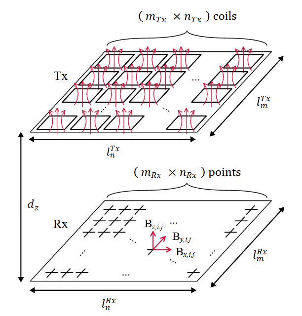
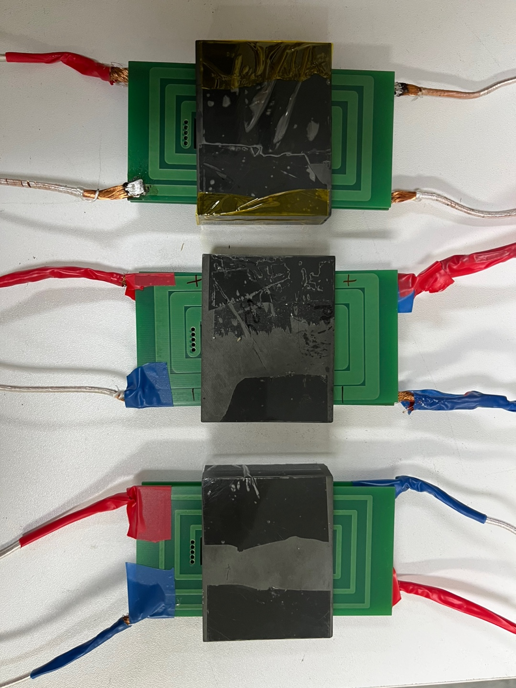
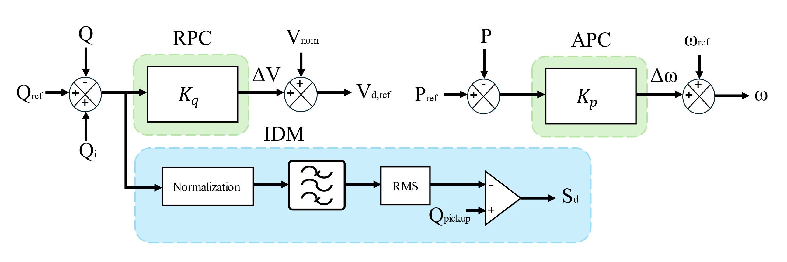
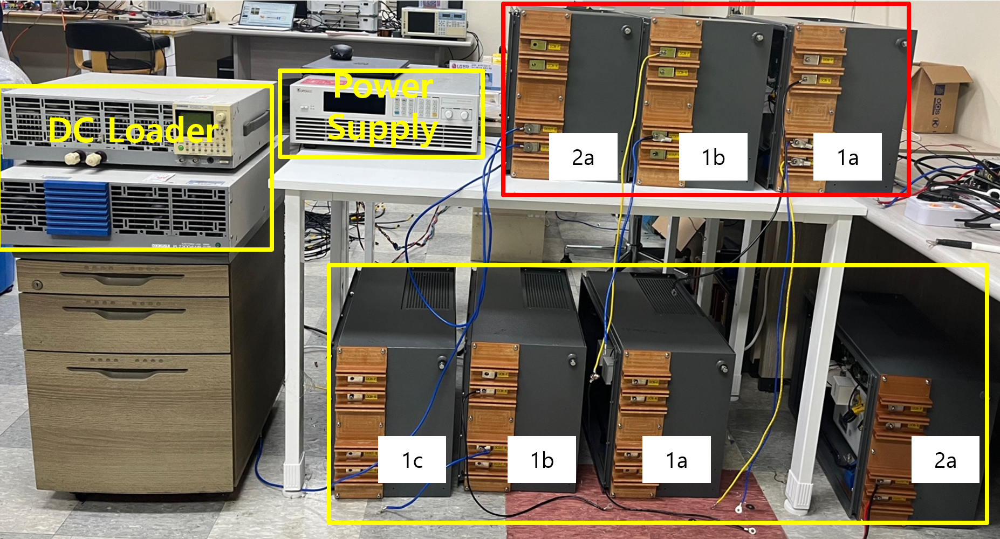
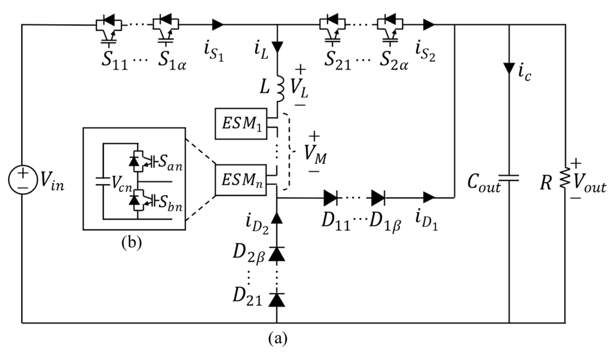

Research

ML
FEM
Machine Learning Based Magnetic Field Focusing
Implementing magnetic field focusing in three-dimensional space
using machine learning.

ML
FEM
Optimal Planar Transformer Design Based on Reinforcement Learning
Finding optimal planar transformer design using reinforcement
learning.

PE
Grid-Forming Inverter Islanding Detection Method
Developing a grid-forming inverter islanding detection method
by reactive power injection.

PE
MVDC/MVAC Converter station for railway system. Comparative analysis of AC/DC and DC/DC
converter stations.
Developing a grid-forming inverter islanding detection method
by reactive power injection.

PE
Non-Isolated Modular Multilevel Converter
A non-isolated step-down (NISD) DC transformer based on
discontinuous conduction mode (DCM)